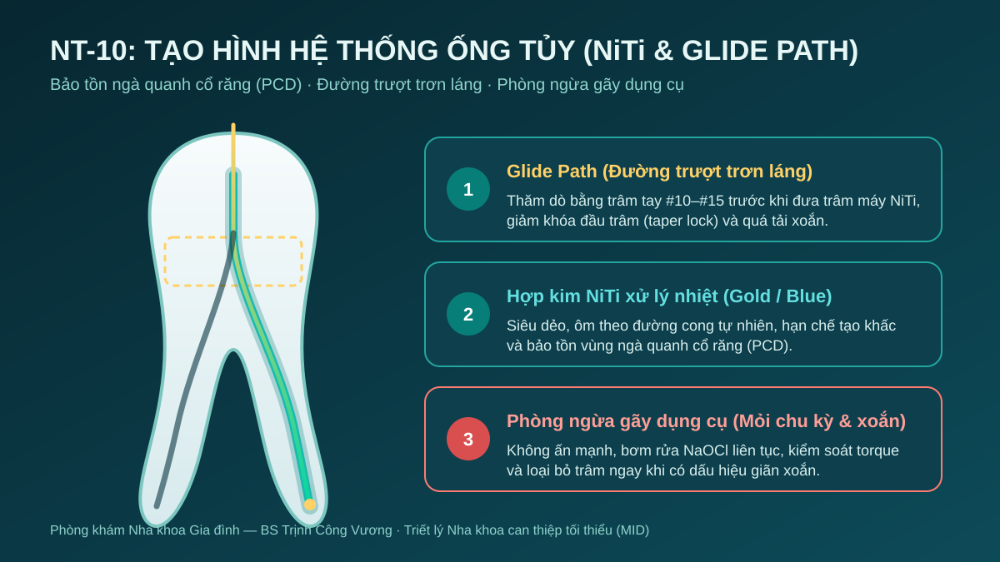

NT-10: Tạo hình hệ thống ống tủy: NiTi, glide path, vận động quay và nguy cơ gãy dụng cụ

Nếu bước mở tủy là mở cánh cửa, thì tạo hình hệ thống ống tủy (Root Canal Shaping) là bước mở rộng "con đường" từ miệng ống tủy đến tận điểm thắt chóp để dung dịch bơm rửa đi tới được mọi ngóc ngách và vật liệu trám bít lấp kín ba chiều. Tuy nhiên, ống tủy thật không hề thẳng tắp như ống nghiệm; chúng thường cong, dẹt, phân nhánh hoặc hẹp bất ngờ. Việc tạo hình vừa phải đạt độ thuôn liên tục, vừa phải bảo tồn tối đa ngà chân răng lành và phòng ngừa gãy dụng cụ.
1. Hợp kim NiTi (Nikel–Titanium) và cuộc cách mạng tạo hình
Trước đây, các trâm thép không gỉ (Stainless Steel) khá cứng, khi đưa vào ống tủy cong rất dễ tạo khấc (ledge), làm lệch trục ống tủy (transportation) hoặc thủng thành chân răng. Sự ra đời của hợp kim NiTi siêu đàn hồi và đặc biệt là các thế hệ NiTi xử lý nhiệt (Heat-treated NiTi như Gold, Blue, CM-wire) đã thay đổi hoàn toàn Nội nha:
- Độ dẻo và khả năng nhớ hình hoặc kiểm soát bộ nhớ (Controlled Memory) giúp trâm uốn lượn theo độ cong tự nhiên của ống tủy mà không làm biến dạng chóp.
- Theo triết lý bảo tồn mô răng (MID), xu hướng hiện nay không mở rộng ống tủy quá thô bạo (giữ độ thuôn hợp lý 0.04–0.06 tùy kích thước chân răng) để tránh làm mỏng thành ngà quanh cổ răng và hạn chế vi nứt ngà.
2. Glide Path (Đường trượt): "Nền móng" chống gãy trâm máy
Một sai lầm kinh điển của người mới làm nội nha là đưa thẳng trâm máy NiTi vào một ống tủy chưa được thăm dò thông thoáng. Glide path là một đường hầm trơn láng từ miệng ống tủy đến tận điểm thắt chóp (thường đạt ít nhất bằng trâm tay #10 hoặc #15 thông suốt tự do, kết hợp trâm tạo đường trượt NiTi chuyên dụng).
Tại sao Glide Path bắt buộc phải có?
- Giảm đáng kể lực xoắn (torsional stress) lên đầu trâm máy NiTi.
- Ngăn hiện tượng "khóa đầu trâm" (taper lock) khi mũi trâm kẹt vào thành ngà hẹp trong khi thân trâm vẫn tiếp tục quay.
- Xác nhận trước độ cong, chỗ chẻ đôi hoặc điểm tắc nghẽn trước khi dùng trâm tạo hình chính.
3. Vận động quay liên tục vs. Vận động qua lại (Reciprocation)
- Vận động quay liên tục (Continuous Rotation): Trâm quay 360° theo chiều kim đồng hồ với tốc độ và mô-men xoắn (torque) được kiểm soát chặt chẽ bởi motor nội nha. Ưu điểm là cắt ngà mượt, thoát mùn ngà tốt lên phía thân răng; đòi hỏi kiểm soát glide path và lực ấn nhẹ nhàng.
- Vận động qua lại (Reciprocating Motion): Trâm quay góc lớn theo chiều cắt rồi đảo chiều nhỏ để nhả lực (ví dụ 150° ngược chiều kim đồng hồ / 30° thuận chiều kim đồng hồ). Cơ chế "tiến – lùi" này giúp giảm ứng suất xoắn và tăng tuổi thọ chống mỏi chu kỳ của trâm NiTi, rất hữu ích trong các ống tủy cong hẹp.
4. Nguy cơ gãy dụng cụ và cách phòng ngừa
Dụng cụ NiTi thường gãy do hai cơ chế chính:
- Mỏi chu kỳ (Cyclic Fatigue): Trâm quay liên tục tại vùng cong gắt khiến kim loại bị nén và giãn lặp đi lặp lại hàng nghìn lần rồi đứt gãy đột ngột mà bên ngoài không thấy biến dạng.
- Quá tải xoắn (Torsional Fatigue): Đầu trâm bị kẹt cứng trong ống tủy hẹp trong khi phần chuôi vẫn quay.
6 nguyên tắc vàng phòng ngừa gãy dụng cụ:
- Luôn tạo glide path thông suốt và mở rộng 1/3 cổ trước khi đưa trâm chính xuống sâu.
- Không bao giờ ấn mạnh trâm máy — chỉ dùng lực nhẹ như cầm bút vẽ (pecking motion 1–2 mm mỗi nhịp) và rút ra làm sạch rãnh cắt thường xuyên.
- Luôn giữ ống tủy ngập đầy dung dịch bơm rửa NaOCl trong suốt quá trình tạo hình để bôi trơn và cuốn trôi mùn ngà.
- Kiểm tra trâm dưới độ phóng đại trước mỗi lần dùng; loại bỏ ngay trâm có dấu hiệu giãn vòng xoắn, cong gập và giới hạn số lần sử dụng.
Địa chỉ: Số 15 đường Võ Nguyên Giáp, phường Đức Xuân, tỉnh Thái Nguyên
Hotline & Zalo tư vấn trực tiếp: 0912 343 858 · Website: https://tcvuong6-wq.github.io/bsvuong-web/